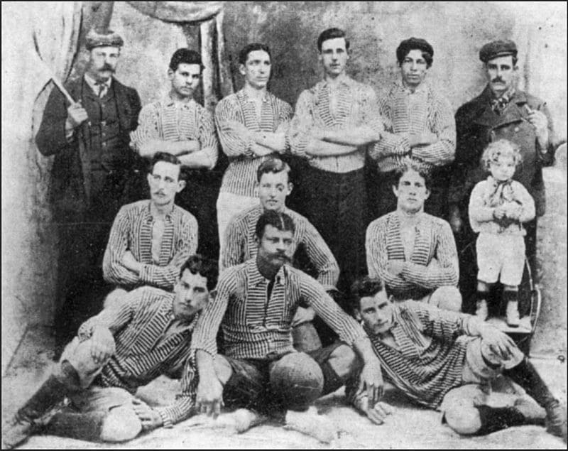
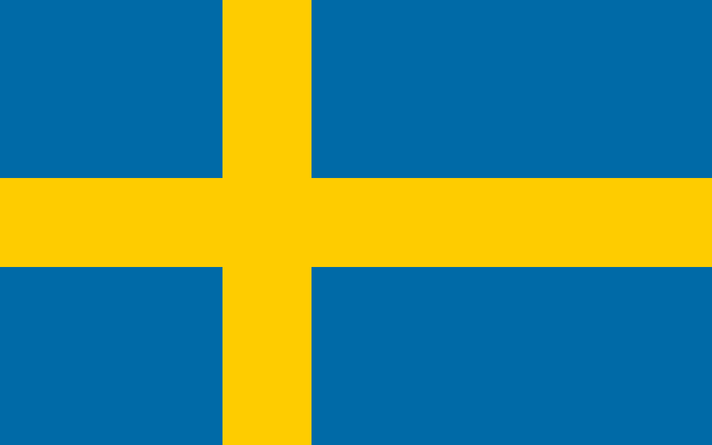

Historia
La historia del Club Atlético Boca Juniors transcurre desde 1905 siendo el fútbol desde los comienzos la esencia del club y, aunque posteriormente el crecimiento de la institución promovió el desarrollo de otras actividades como las bochas o el básquet, aquel permaneció como la disciplina deportiva sobre la cual se sustenta la entidad y la que le valió su reconocimiento a nivel nacional e internacional.
Primera Formacion
Primera foto del equipo de Boca Juniors, cuando recién se fundó en 1906, luego de ganar la Copa Reformista. El club usaba su primera camiseta estable: fondo blanco con rayas verticales (no está confirmado si eran azules o negras). En la foto están, de izquierda a derecha: (Arriba) Juan Brichetto —linesman y 2 veces presidente de Boca—, José Farenga, Pedro Moltedo, Alejandro Penney, Marcelino Vergara y Santiago Basigaluppi. (Medio) Germán Grande, Arturo Penney y Juan Prieno. (Abajo) Juan Farenga, Juan De Los Santos y Luis Cerezo. Falta Guillermo Ryan.
Colores
Según la tradición de los simpatizantes de este club, los colores oficiales del Club Atlético Boca Juniors fueron elegidos en un juego de azar entre los fundadores, en el cual iban a ser elegidos los colores de la bandera de la primera embarcación que ellos vean arribar al puerto de La Boca. En consecuencia, los colores fueron atribuidos a un barco de bandera sueca